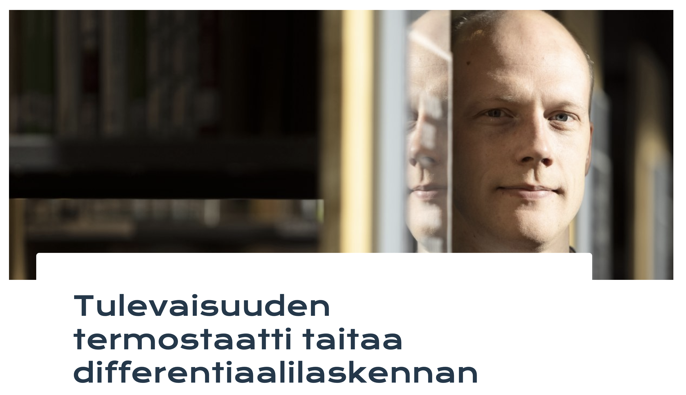

We develop mathematical theory for analysis and control of partial differential equations. The main focus is on deep and detailed analysis of challenging models arising from real-world applications.
Welcome!
This is the website of the Systems Theory Research Group at the Mathematics unit of Tampere University, Finland. Our research group focuses on the following topics:- Functional analysis
- Mathematical systems theory
- Analysis of partial differential equations
We invite you to get to know our
Members and
Publications, and take a look at some of our past
Video presentations.
Below you can also find an introductory video about our research group.
Description of main research interests
The main research interest of the group are the robust control of linear partial differential equations and infinite-dimensional systems, and the practical engineering applications of the theory. You can find an introduction in a poster from here!
Mathematical systems theory studies the behaviour and properties of dynamical models that are described by ordinary and partial differential equations, as well as other models with dynamical behaviour. Such dynamical systems arise from modelling phenomena that are encountered in engineering applications and in the nature.
Some concrete examples of control problems can also be found in these introductory slides and this short video overview:
Mathematical control theory concentrates on influencing the behaviour of such dynamical models to either improve the properties of the system or to drive the system into a desirable trajectory.
Mathematical systems theory is used in, for example,- Trajectory control for unmanned vehicles, such as quadrocopters
- Automatic control of driverless cars
- Rejection of disturbances in industrial processes and acoustics
- Removal of unwanted vibrations in buildings and in machinery
The main research area of the Systems Theory Research Group at Tampere University is the control of models involving partial differential equations and infinite-dimensional systems. This class of models facilitates the control of processes involving, in particular,
- Heat diffusion and material flows
- Vibrations and wave phenomena
- Elastic deformations and bending
Key points of interest of the research group:
- Theory of Distributed Parameter Systems
- Robust output regulation and the Internal Model Principle
- Tracking and rejection of periodic signals
- Semigroup theory and asymptotic behaviour of linear partial differential equations
Research projects:
• Research Council of Finland project funding "Stability and Control of Hyperbolic Partial Differential Equations" (2022-2026).
• Research Council of Finland project funding "Robust Control of Distributed Parameter Systems" (2017-2021).
• Research Council of Finland postdoctoral funding "Stability of semigroups and robust control of infinite-dimensional systems" (2016-2019).
External links:
• The Research Group's Youtube channel
• Lassi Paunonen's Youtube channel
• Dr. Nicolas Vanspranghe's Research Homepage
• RORPack for Matlab and RORPack for Python - A Matlab toolbox and a Python library for robust output tracking and disturbance rejection for PDE systems.
• DPS Jobs - A website listing open positions in control of PDEs and distributed parameter systems.
News
April 2024:Three new preprints and one conference presentation video published online! The details of the preprints can be found at the Publications page, and the video is linked below.
New website online!
A new conference presentation "Internal Model Control for PDE Systems" online. The talk was presented at the "Internal Model Based Regulation" Workshop at CentraleSupélec in Paris, France, November 2023.
Thavamani Govindaraj succesfully defended her PhD thesis "Robust Output Regulation of Euler-Bernoulli Beam Models" on August 11th, 2023 at Tampere University! Professor Doctor Birgit Jacob acted as the opponent. The thesis manuscript is available online at this address.
Mikko Lehtimäki succesfully defended his PhD thesis "Model Order Reduction for Modeling the Brain" on August 11th, 2023 at Tampere University! Doctor Jennifer S. Goldman acted as the opponent. The thesis manuscript is available online at this address.
A very nice new interview with Konsta Huhtala in the TEK-magazine on his PhD work on control of thermal fluid flows. The interview (in Finnish) is available here: 
New articles online:
[*] Mikko Lehtimäki, Lassi Paunonen, and Marja-Leena Linne. Accelerating Neural ODEs Using Model Order Reduction. IEEE Transactions on Neural Networks and Learning Systems, 2022. [ preprint, journal version (Open Access), preprint (arXiv) ]
[*] Dmytro Baidiuk and Lassi Paunonen. Robustness of polynomial stability of damped wave equations. Journal of Dynamics and Differential Equations, 2022. [ preprint, journal version (Open Access), preprint (arXiv) ]
[*] Ralph Chill, Lassi Paunonen, David Seifert, Reinhard Stahn, and Yuri Tomilov. Non-uniform stability of damped contraction semigroups. Analysis & PDE, accepted. [ preprint, preprint (arXiv) ]